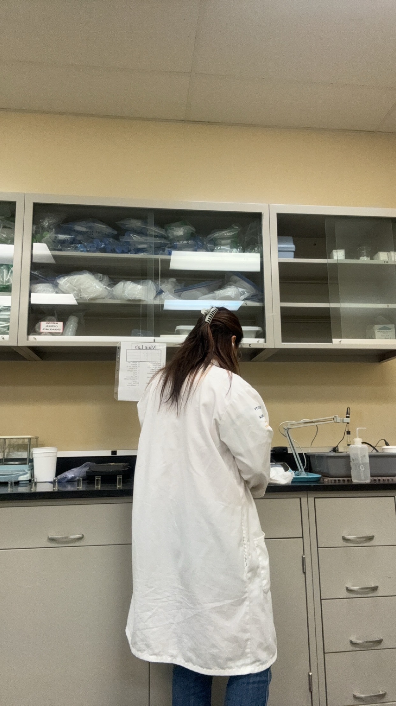
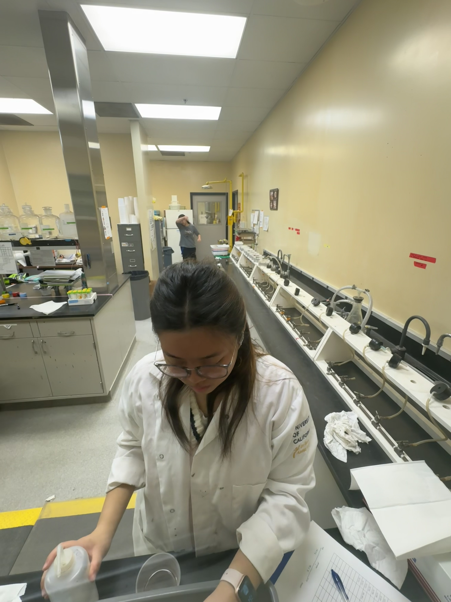

Christine Chung
Hello my name is Christine Chung and I graduated with a bachelor's degree in Biology and I aspire to be a physician in the future. From a young age, I always wanted to help people through medicine. This led me to pursue my degree in biology where I have immersed myself in coursework and hands-on research that deepens my undertaking of biological systems. My academic journey has provided me with a strong foundation in cellular biology, genetics, and environmental science, equipping me with the tools to investigate the challenges and innovations shaping our world.
Currently, I am engaged in a research experiment at the USDA Salinity Laboratory, where I have the opportunity to apply my knowledge in a real-world setting and learn new information that I have never learned. Working alongside experienced scientists, I contribute to studies that explore the impact of soil salinity on the local farmer’s crop health and agricultural sustainability. Through this given opportunity, I was able to experience hands-on fieldwork, data analysis, and various laboratory techniques. Although people may think that the research that I am in is a different pathway than medicine, I agree with them. I chose a different field for research because I wanted to explore a different pathway than medicine. As medicine is important, I also think that having knowledge about our environment and the state that environmental scientists go through to sustain our food is crucial.
My journey in biology is driven by curiosity, dedication, and a desire to make a positive impact on the world whether it is through my current research or being a physician in the future. I look forward to many more opportunities that lie ahead and am excited to continue to grow as a person and as a problem solver in this ever-evolving field.
Experience
Research
• Worked independently and as a team to collect and analyze data and maintain accurate records
• Performed tasks such as mixing the saturated paste and extracting the moisture of the soil from soil samples using laboratory techniques
• Experience with Google, Excel, WebGIS
Volunteer
• Communicated with patients, nurses, and doctors
• Served for the under-represented and disabled community
• Performed tasks such as escorting patients, restocking medical supplies, running erands, answering phone calls, and clerical tasks
Teacher Assistant
• Worked with 3-4 years old children
• Read books, teach basic alphabets and numbers to the chilren
Education
University of California Riverside
Portfolio

